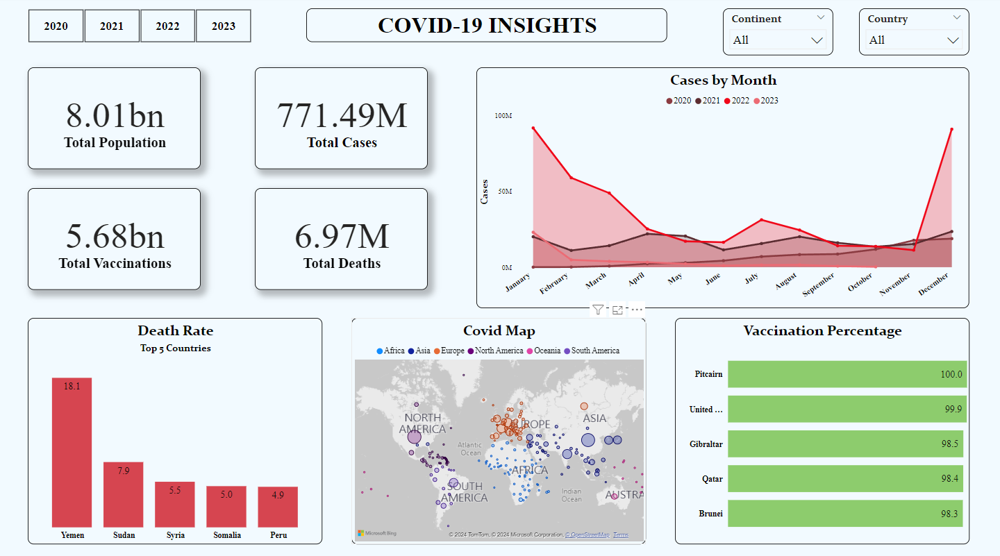

COVID-19 Insights
I downloaded a COVID dataset from Kaggle, and it turned out to be quite extensive. Most columns were fine, but there were null values in some. I decided to clean it up by removing those null columns and started my analysis. While getting total cases and total deaths was straightforward using Power BI, calculating metrics like vaccinations per hundred people and death rates proved to be a bit tricky. The nature of the dataset was such that it provided daily updates, resulting in numerous duplicates. To streamline the data, I undertook manipulations to derive the total population and the number of people vaccinated for each country.

After obtaining the data, I created a new sheet where I calculated the vaccination percentage of people for each country and later used it
for visualization.
Next up, I needed to determine the death rate (how many people are dying per hundred cases) for each country.
Using DAX, I created a new table specifically to calculate the death rate.
Now that I have all the metrics, I dived into visualization using Power BI.
Now, if I want to view the data specific to my country, Bangladesh, I can use the country filter. Additionally, I have the flexibility to explore data for any particular year as needed.